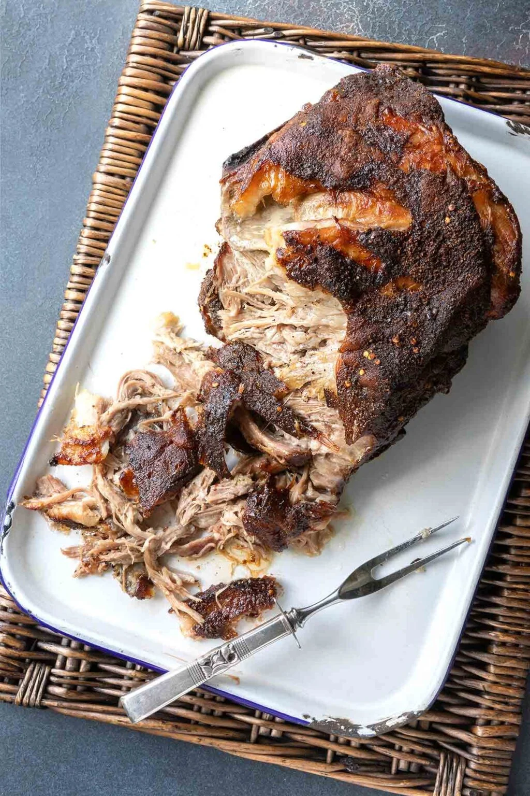

Roasted Pork Butt

This roasted pork butt, coated in a simple rub of brown sugar, paprika, cumin, and red pepper flakes, is an incredibly easy recipe to make and yields enough pulled pork to feed a small army. It’s roasted low and slow in the oven until falling-apart tender.
1 tblspDiamond kosher salt1 tblsplight brown sugar1 tblsppaprika½-1 tblspred pepper flakes1 tblspground cumin1 tblspcoarsely ground black pepper- One (6 ½- to 8-pound) bone-in skinless pork butt (Boston butt), or pork shoulder or two 3 ½- to 4-pound pork butts
- Your favorite storebought or homemade barbecue sauce (optional)
In a small bowl, stir together the salt, sugar, paprika, pepper flakes, cumin, and black pepper.
Rub the pork butt all over with the spice mixture. The pork butt should be completely coated on all sides. If you have time, tightly wrap the pork in plastic wrap, place it on a plate, and refrigerate overnight to let the flavors mingle.
Preheat the oven to 250°F (121°C). Place a wire rack in a roasting pan. (To make this on a grill, see the instructions in the FAQs above.)
Place the pork butt, fat side up, on the rack. Roast the pork, uncovered, until the internal temperature reaches 190 to 195°F (88 to 91°C).
By this point, the exterior should be crispy and dry. This is similar to what’s referred to as “bark” when smoking on a grill. This can take anywhere from 4 to 10 hours, depending on your oven and the size of your pork butt.
Remove the roast from the oven and let it rest for 15 minutes.
TESTER TIP: If you’re craving super-moist meat for pulled pork, remove the pan from the oven, tightly wrap the pork butt in a couple of layers of heavy-duty aluminum foil, and let it rest for 30 to 45 minutes to soften the exterior.
Shred the roast pork butt with a couple of forks, evenly mixing the crisp, dry edges with the insanely moist, tender pork inside.
You may want to slather the pulled pork with barbecue sauce to impart flavor and sauciness, but I urge you to try it naked first.